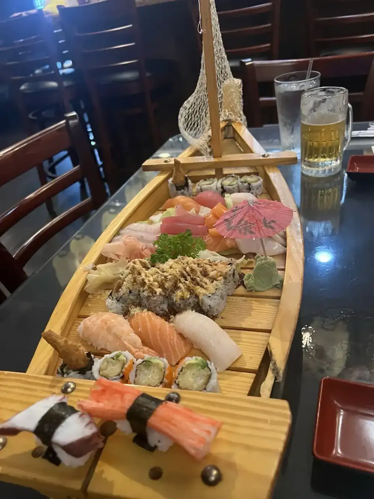
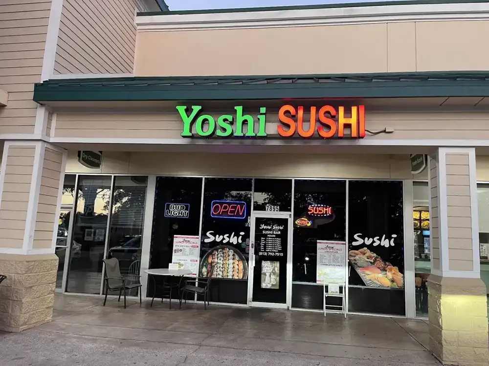
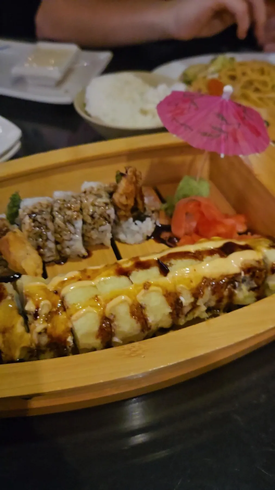
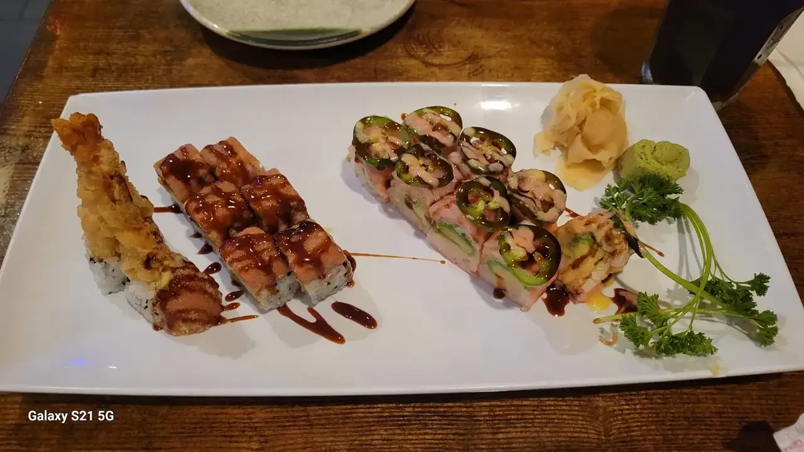
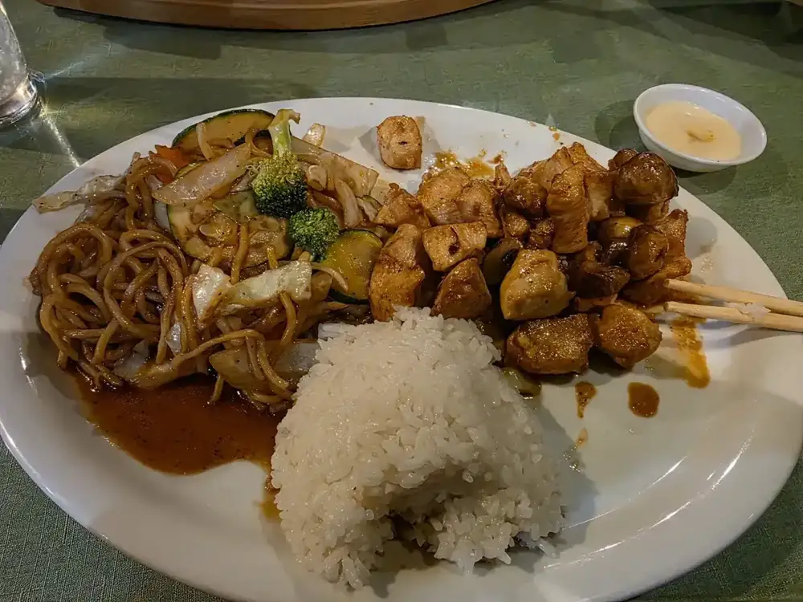
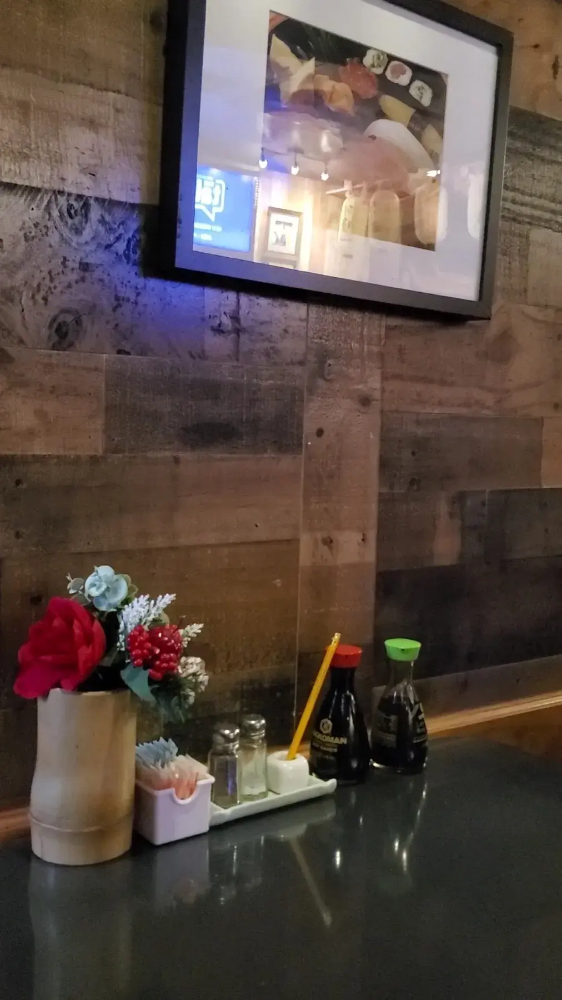

Sushi on the boat
Order rolls and they arrive on a wooden boat with a paper umbrella. One guest called it so pretty.


Sushi & stir fry · Gunn Hwy, Tampa
A small, cozy neighborhood spot where reviewers call the sushi fresh, the staff friendly and the room the closest thing to an izakaya in Tampa.
Boats, boxes and stir fry
Rolls arrive on a wooden boat, dinner boxes come loaded and the stir fry plates are piled high.
Order rolls and they arrive on a wooden boat with a paper umbrella. One guest called it so pretty.

A bento-style tray with rolls, tempura, dumplings and more. A reviewer loves the beef box, tender and tasting of grilled steak.

Noodles, vegetables and your choice of protein with rice, plated generously.






4.7511 Google reviews
This is my favorite sushi spot in Tampa! After visiting Japan late 2025 I’ve been chasing that feeling and Yoshi 1000% hits the spot. The atmosphere is the closest to an authentic izakaya that I’ve found so far, the sushi is always fresh and delicious, and their hot sake deal is such a nice bonus!
Amazing dinner box! Love the beef one. It's tender and flavorful of grilled steak. I ordered 2 sushi rolls and they put them on the boat. so pretty! Servers are kind and friendly. Will come back next time. The price was affordable and reasonable. Atmosphere was great and cozy vibe.
Excellent friendly and fast service! Sushi is very fresh and beautifully plated along with all their stir fry dishes. Varity of sushi rolls to choose from in a really nice cozy comfortable atmosphere with hanging lights and a neighborhood feel.

The pit
Yoshi Sushi is a sushi restaurant on Gunn Hwy in Tampa serving sushi rolls, stir fry dishes and dinner boxes.
Reviewers describe a nice small, comfortable restaurant with hanging lanterns and a neighborhood feel. One regular has been coming since they first opened, and several name the service: friendly, fast, and Lee the waitress gets a shout-out.
Come hungry
7895 Gunn Hwy, Tampa, FL 33626
A small dining room, so call ahead if you are bringing a bigger group.